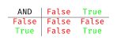
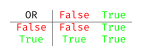
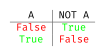

Informatique et Calcul Scientifique
Cours 2
Révision
Au Cours 1, nous avons vu :
- les objets et leurs types (
int,float,str,bool,NoneType), et comment caster l’un vers l’autre ; - les variables, l’affectation
variable = expression, et le fait qu’une variable est une référence vers un objet ; - les structures conditionnelles
if/else/elif, qui choisissent le bloc de code à exécuter selon qu’une condition est vraie ou fausse.
Les conditions booléennes
Nous avons déjà écrit des conditions comme age < 18, sans jamais dire précisément ce qu’est « une condition ».
- Rappelons que nous avons vu un objet
True, qui avait le typebool. Il n’existe qu’un seul autre objet de ce type,False. - Une condition booléenne est une expression qui s’évalue à l’un de ces deux objets.
- Pour créer une condition booléenne, on peut utiliser des relations :
- pour comparer les valeurs de deux objets :
<,<=,>,>=; - pour tester l’égalité des valeurs de deux objets :
==,!=.
- pour comparer les valeurs de deux objets :
Attention. == teste une égalité, alors que = affecte une variable. Confondre les deux est une des erreurs les plus courantes.
Comparaisons de str
Les opérateurs de comparaison fonctionnent aussi avec les str.
- L’égalité (
==) est sensible à la casse. - L’ordre suit l’ordre lexicographique (comme dans un dictionnaire).
- Les majuscules ont une valeur plus petite que les minuscules.
- Si un
strest un préfixe de l’autre, le plus court est plus petit. - Les espaces sont plus petits que toutes les lettres.
Des conditions non-booléennes
Dans une instruction if, si on donne une condition qui s’évalue à un objet qui n’est pas de type bool, Python essaye de caster cet objet en un bool.
- Le nombre
0(floatouint) est casté enFalse, et tout autre nombre enTrue. - Un
strvide est casté enFalse, et tout autrestrenTrue.
En général, si un objet a une valeur « vide », il sera casté en False, sinon en True.
Combiner des expressions booléennes
On peut combiner les valeurs de plusieurs expressions booléennes avec les opérateurs and, or et not.



Le fonctionnement de ces combinaisons est intuitif, mais nous le précisons ici à titre de référence.
Boucles et itérations
Outre les conditions if/else/elif, l’autre moyen important d’influencer le flux de contrôle est avec les boucles et itérations.
Ces structures permettent de répéter une portion de code un certain nombre de fois.
Commençons par la boucle
while, qui permet de répéter une portion de code tant qu’une certaine condition estTrue.

L’instruction while
L’instruction while permet de répéter un bloc d’instructions tant qu’une condition est évaluée à True. C’est ce qu’on appelle une boucle.
- Tant que
conditionAest vraie,blocAest exécuté, puisconditionAest réévaluée. - Dès que
conditionAdevient fausse, la boucle s’arrête et le programme continue.
Remarque. N’oubliez pas les deux-points après la condition et l’indentation du bloc de code.
Attention aux boucles infinies !
Une boucle infinie se produit quand la condition d’un while reste toujours True. La boucle va itérer à l’infini et le programme ne s’arrêtera jamais !
n = 5
print('Début du compte à rebours depuis', n)
while n > 0:
print(n)
# On oublie la décrémentation !
print('Décollage !')Remarque. Vérifiez toujours que votre variable de contrôle est modifiée dans la boucle, sinon la condition ne changera jamais. Il faut généralement éviter les boucles de la forme while True: ...
Exemple d’un calcul avec while
Les boucles sont utiles pour effectuer des calculs répétitifs. Calculons la somme des n premiers nombres entiers, c’est-à-dire 1 + 2 + 3 + ... + n.
Il nous faut deux variables :
- un accumulateur, qui retient la somme des nombres déjà traités ;
- un compteur, qui retient le prochain nombre à ajouter.
Explication. À chaque itération, on ajoute le compteur à l’accumulateur, puis on incrémente le compteur. La boucle s’arrête quand le compteur dépasse n.
L’instruction break
L’instruction break permet de sortir immédiatement d’une boucle while, même si la condition est encore True. C’est utile pour arrêter une boucle selon une condition particulière.
Cherchons le plus petit commun multiple de deux entiers a et b.
On essaie
x = 1, 2, 3, ...jusqu’à en trouver un qui soit divisible paraet parb. Deux façons de s’arrêter :- avec
break, on boucle surwhile Trueet on sort dès quexconvient ; - sans
break, on met directement la condition d’arrêt dans lewhile.
- avec
Remarque. L’instruction break peut être utile, mais en général il vaut mieux l’éviter. Souvent, il vaut mieux être plus précis lors du choix de notre condition while.
Cela dit, break permet une chose qu’une condition while ne permet pas : sortir au milieu du bloc. La condition d’un while n’est testée qu’en haut de la boucle, donc la fin du bloc est toujours exécutée avant de sortir.
Introduction aux boucles for
La boucle for s’utilise quand on veut exécuter une portion de code un nombre connu de fois. Elle est idéale pour itérer sur des séquences de valeurs prédéfinies.
variableest la variable d’itération (elle peut avoir n’importe quel nom).itérableest une structure que l’on peut parcourir ; par exemplerange(4), qui contient les valeurs0,1,2,3.- À chaque itération,
variableprend la valeur suivante de la séquence, puisblocAest exécuté.
La fonction range
Pour n un entier arbitraire, range(n) contient les valeurs 0, 1, . . . , n-1.
range(5)contient :0,1,2,3,4.range(1)contient :0seulement.range(0),range(-1)etrange(-2)sont vides.
Pour i et j deux entiers, range(i,j) contient les valeurs i, i+1, . . . , j-1.
range(2,6)contient :2,3,4,5.range(3,4)contient :3seulement.range(5,5)etrange(6,2)sont vides.
La fonction range Pt. 2
range(i, j, k) crée une séquence allant de i à j avec un pas de k.
i,jetkdoivent tous être des nombres entiers.- Le pas
kpeut être négatif, mais pas0.
Remarque. range(0, n, 1), range(0, n) et range(n) sont identiques.
Boucle while vs boucle for
Toute boucle for peut se récrire comme une boucle while :
⟶
Quand utiliser chaque type ?
- Boucle
for: quand on connaît le nombre d’itérations à l’avance ; - boucle
while: sinon.
Remarque. La boucle for avec range() offre une syntaxe plus concise et claire pour de nombreux cas d’usage courants.
Boucles imbriquées
- Il est possible d’imbriquer des boucles.
- La boucle interne s’exécute complètement pour chaque itération de la boucle externe.
Remarque. Le nombre d’itérations de la boucle intérieure peut dépendre de la variable d’itération de la boucle extérieure.
Autres structures itérables
Nous avons vu que
range(n)est une structure itérable, donc nous pouvons la parcourir avec une bouclefor.Mais ce n’est pas la seule ! En fait, nous en avons déjà vu une (
str).Nous en verrons aujourd’hui une autre (
tuple) et bien d’autres encore après !
Remarque. L’anatomie de la boucle ne change jamais : seule la case itérable change. À chaque tour, variable prend l’élément suivant, quel que soit le type de la structure parcourue.
str : itération et indexage
- Les
strsont aussi des objets indexables. En particulier, nous pouvons les indexer paripour obtenir leième caractère. - Nous pouvons donc indexer une
strpar n’importe quel entier de0àn-1, oùnest la longueur de lastr. Cela donne une autre façon de parcourir les caractères d’unestr, qui nous permet aussi de parcourir à l’envers.
Remarque. len est un outil intégré à Python qui donne la longueur de plusieurs structures différentes. Nous verrons au Cours 3 qu’il s’agit d’une fonction.
Les tuples
- Un tuple est une structure qui permet de regrouper plusieurs objets dans un seul objet.
- Les tuples se créent avec des parenthèses
()et les éléments sont séparés par des virgules. Ils peuvent contenir des éléments de types différents :int,float,str… - Comme les
str, les tuples sont indexables : on peut accéder à chaque élément par sa position, l’indexation commençant à0. - Ils sont aussi itérables, donc on peut les parcourir avec une boucle
for. - On peut aussi les parcourir en utilisant les indices.
Remarque. Comme pour les str, essayer d’accéder à un index qui n’existe pas provoque une erreur. De même, on peut faire des calculs sur un tuple : len, max, min, sum…
Packing et Unpacking
Python permet de pack…
Python permet aussi de unpack (déballer) un tuple en affectant ses éléments à plusieurs variables en une seule fois. Par exemple, les deux codes suivants sont équivalents :
Attention. Python peut seulement faire un unpacking si le nombre de variables à gauche est exactement la longueur du tuple à droite.
Remarques sur le Packing/Unpacking
En fait, vous avez déjà utilisé le unpacking de tuples sans le savoir : dans les affectations multiples du Cours 1.
Conditions d’appartenance : in
Nous avons maintenant vu trois structures itérables :
range,strettuple.Pour chacune d’elles, l’opérateur
infabrique une condition booléenne :objet in itérables’évalue àTruesiobjetest un des éléments que parcourrait une bouclefor, et àFalsesinon.
- L’opérateur
not inen est la négation, et ces conditions se combinent avecand,oretnotcomme toutes les autres.
Remarque. Pour les str, in teste en fait la présence d’une sous-chaîne entière, et pas seulement d’un seul caractère : 'zz' in 'pizza' s’évalue à True.